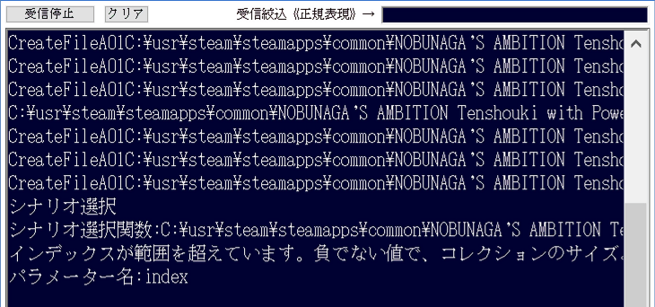

ここでは良くあるフリーズのパターンについて、
紹介します。
圧倒的によくあるフリーズの例。
それは「○○->配列[ix]」のような、配列にアクセスする際、
ixの値をチェックしていないため、「配列外アクセスエラー」になり、即フリーズする、というものです。
上のようなフリーズの場合に行うのは、try ... catch で
イベントハンドラを囲む、というものです。

又、「○○->配列」の範囲内にあるのかないのかを調べるのは、
以下のように「Is_Contains」を利用できます。
少し慣れてきたころによくある例、
それが、.NETではお馴染みの「gcnewしていないマネージ参照のプロパティに値を突っ込んでいる」というものです。
同様にtry...catchで囲むと、下記のようなエラーとなる。
正しく直すには、gcnewする必要があります。
以上が「よくあるフリーズ」の例となります。